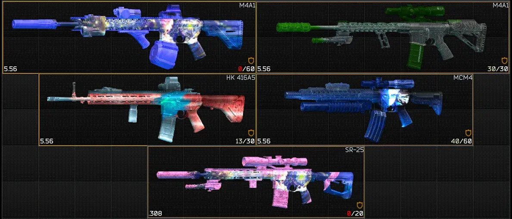
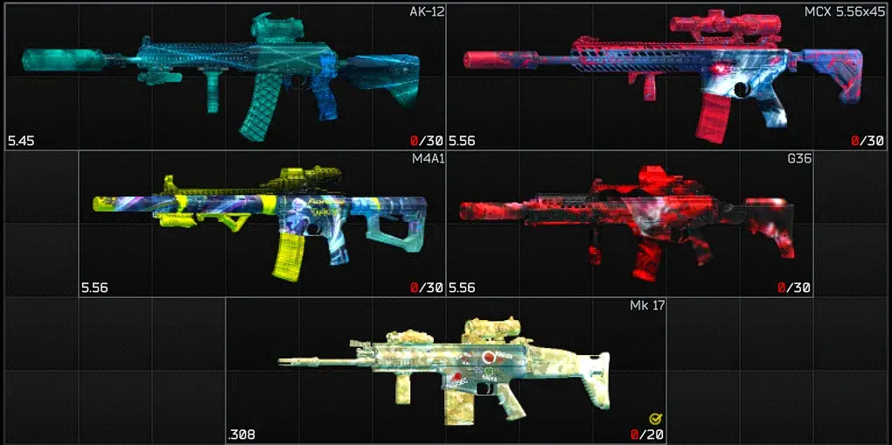
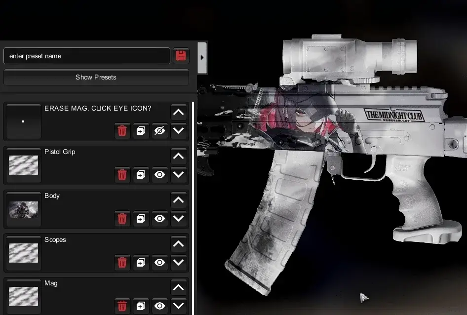
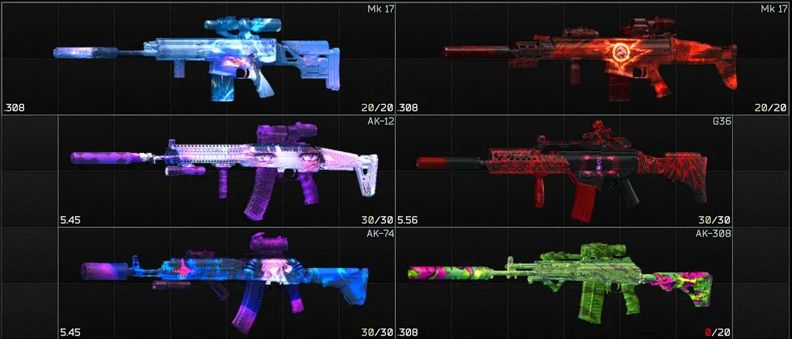
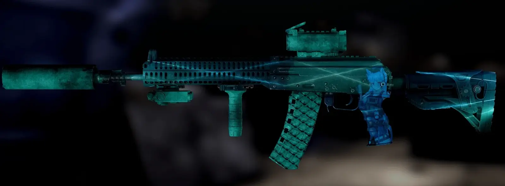
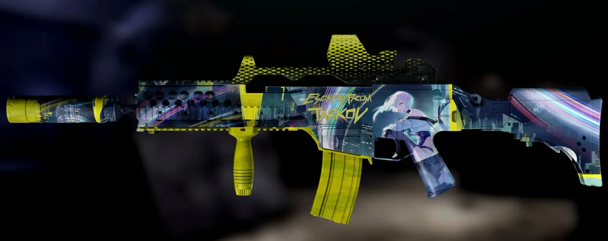
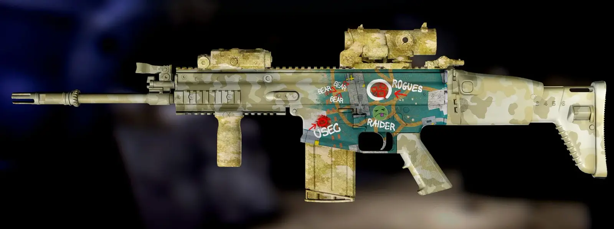
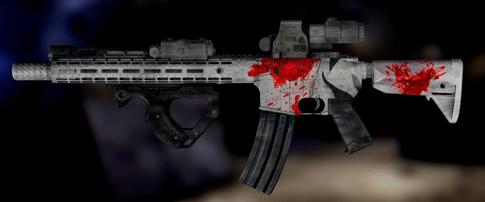

Anime & LARP Camo Presets
- Downloads
- 3,484
Turning camo dreams into reality.
Anime & LARP includes 30 Presets, Textures, & Stickers.
- 21 M4 Presets | M4’s need a break..
- 7 AK Presets
- 4 G36 Presets
- 3 Scar Preset
- 1 Glock Preset


Maybe a glock fade included somewhere..
Anime Skins

LARP Skins

Skins Are Compatible with Most Weapon Builds

📝 Note: Weapon camo presets are tailor made for specific weapon families.
(E.g M4 camo preset = M4, ADAR, HK 416, SR-25, TX-15, etc.)
❗Not responsible if camo doesn’t look good outside of weapon camo name.
CAMO MODULAR
Paints are labelled. Customize as you see fit.

MAG ERASER
Optional “Mag Eraser” built in to eliminate camo. Included with every preset.

Download these addons otherwise you will need to replace textures/masks/stickers yourself

Please report issues in the comments section
Shoutout to the WTT community for hyping my creations & 7Bpencil for taking my suggestions to help expedite my work.
Version
1.3.0
NEW / FIXES
- ⚠️ Added Black Ops 3 Base and Cut Camos as a recommended addon.
- ⚠️ Updated Spirit’s Embroidery.
-
Fixed sticker directory. If you had a previous version, you can delete BepInEx\plugins\7Bpencil.WeaponCamoAndStickers\stickers
- Small mag paint changes to M4/G36 Cyberpunk
6 New Camos
- 3 AK’s | AK Denia, AK Chisa Eyes, AK Exposed Camo
- 2 Scar’s | Scar Dawn, Scar Galbrena
- 1 G36 | G36 Spider

Version
1.2.0
NEW / FIXES
- G36 skins Debut!
- Resolved cases where scopes would break outside the z-axis box (green arrow) & lose texture, most notably with hybrid scopes.
9 New Camo Presets
- 4 M4’s
- 3 G36’s
- 2 AK’s
Horse Girl on My Gun?

Escape From Cybertark (M4 Variant available)

Have fun exploring!.. now to sleep.
Version
1.1.1
Small update
New / Fixes
- Further reduced file size
- Added missing texture for preset “M4 Joumae Saori”
- ⚠️ REMINDER added Spirit’s Embroidery as a recommended addon.
Version
1.1.0
NEW
-
⚠️ Added Spirit’s Embroidery as a recommended addon.
- Reduced overall file size
- Added “Mag Eraser” with every preset (Visit tab “CAMO MODULAR & MAG ERASER”)
Due to this, Weapon Camo And Stickers v1.7.0+ is now required
8 New Camo Presets
- 5 M4’s
- 2 AK’s
- 1 Scar
LARP as Knight

Walk with Drip

Version
1.0.0
Initial Release
- Majority of these presets are for M4-like weapons unless named otherwise